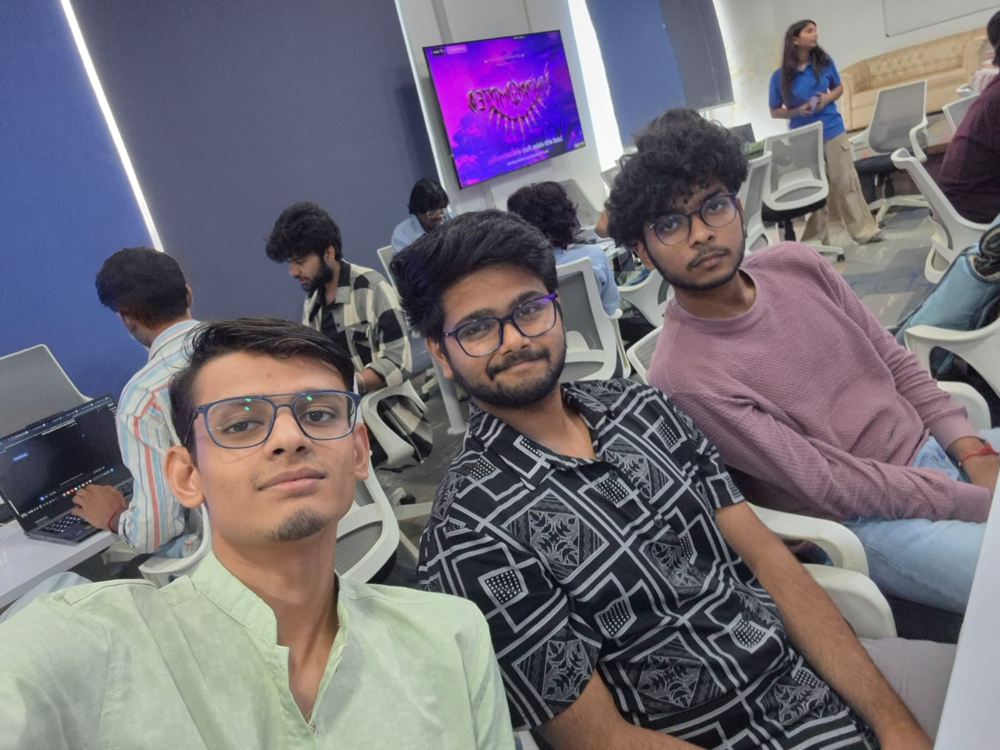
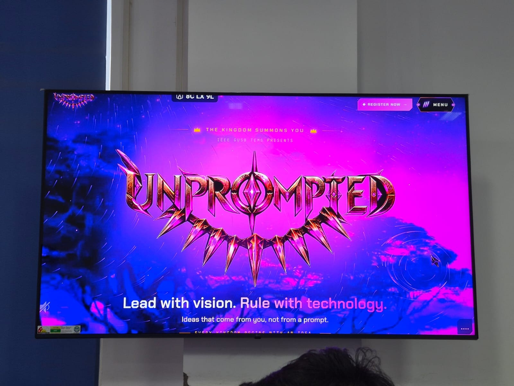

1st Place
Meridian × Proxy — Timezone Burnout Tracker & Async Proxy
Built the Meridian module that tracks individual overtime and late-night meeting load across timezones and automatically rotates schedules to prevent teammate burnout.

Team at Venue
Unprompted
Burnout Dashboard Demo ↗
View photos, architecture & role →